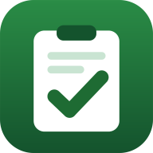

Dinas Perkebunan Provinsi Jawa Timur
Pasang sekali, lalu buka lewat ikon di layar utama seperti aplikasi biasa.
Saat pertama kali membuka, Google meminta izin. Pilih akun Anda, lalu tekan
Lanjutan › Buka Log Aktivitas Harian ASN. Peringatan itu
muncul karena aplikasi ini dibuat sendiri oleh instansi, bukan aplikasi umum.
Catatan aktivitas Anda tersimpan di Google Drive akun Anda sendiri dan tidak
dapat dibaca oleh siapa pun, termasuk pembuat aplikasi.
execUrl pada berkas config.js dengan URL Web app
Apps Script yang berakhiran /exec.